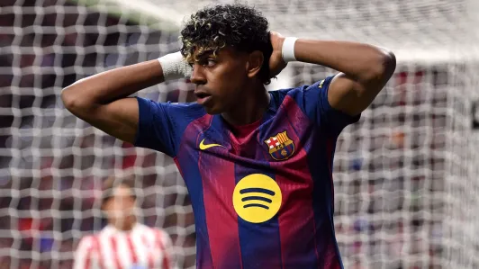

O atacante Lamine Yamal se manifestou pela primeira vez após a lesão muscular na coxa esquerda que o tirou do restante da temporada do Barcelona. Em publicação nas redes sociais, o jogador de 18 anos lamentou o momento em que sofreu o problema físico e destacou o impacto de ficar fora da reta decisiva. “A lesão me tira de campo no momento em que eu mais queria estar, dói mais do que eu posso explicar. Dói não poder lutar com os meus companheiros, não poder ajudar quando a equipe mais necessita. Mas sei que eles vão deixar a alma em cada partida”, escreveu.
